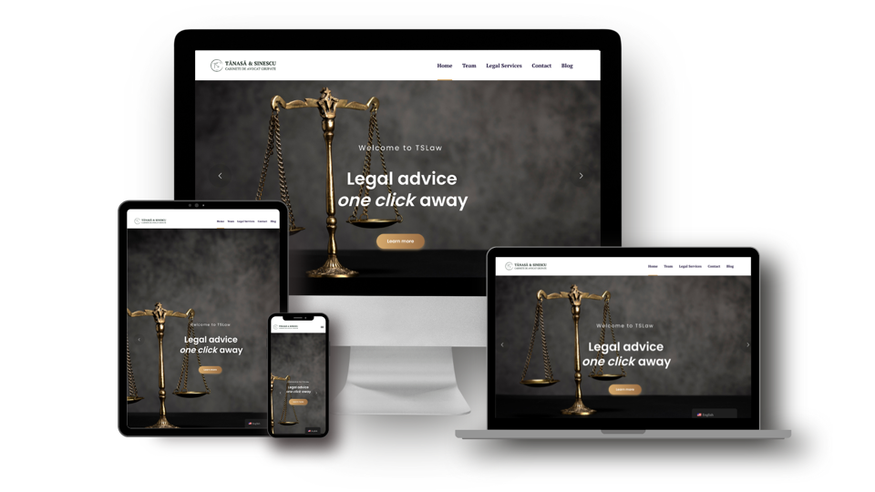
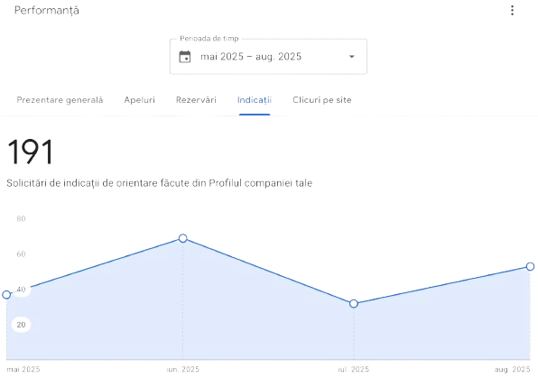

TSLaw
Studiu de caz

În lumea modernă prezența digitală nu mai este opțională, ci o necesitate. Avocații din cadrul Tănasa & Sinescu - Cabinete grupate de avocatură (TSLaw) au ales SOLON, agenția digitală specializată în servicii digitale pentru avocați, pentru a eleva identitatea digitală a practicii juridice și pentru a îmbunătăți relația cu clienții lor.
Proiectul a vizat un proces complet de digital branding, development, marketing și optimizare operațională, incluzând:
- Design-ul identității vizuale (logo, cărți de vizită, dosare personalizate, manual de brand, etc.)
- Dezvoltarea unui website modern, performant și SEO-optimizat
- Elaborarea și implementarea unei strategii de marketing digital integrate
- Management strategic al canalelor Social Media
- Crearea de fluxuri automatizate pentru procese administrative și de comunicare
Sari la 1. Strategie • 2. Implementare • 3. Rezultate • 4. Concluzie

1. Strategie
Scopul proiectului a fost de a construi o prezență digitală puternică care să reflecte valorile profesionale ale Cabinetului TSLaw, consolidând în același timp relația cu clienții existenți și atrăgând clienți noi.
Informații proiect
- Tip client: Cabinete Grupate de Avocatură
- Locație: Cluj-Napoca
- Tip abonament: GOLD
- Website: https://tslaw.ro/
Servicii implementate de  SOLON
SOLON
- Strategie marketing
- Mentenanță 2 profile Social Media
- Research hashtags
- Design logo
- Design + print cărți de vizită
- Design + print dosare personalizate
- Manual de brand
- Adresa email personalizate
- Design UI/UX website
- Implementare website
- Implementare blog cu panou de control
- Mentenanță website
- Analytics website
- Optimizare SEO
2. Implementare
Echipa SOLON a început cu o analiză aprofundată a nevoilor și obiectivelor digitale iar mai apoi a dezvoltat o strategie integrată care să cuprindă toate aspectele identității digitale. Analiza aprofundată a vizat percepția de brand și comportamentul digital al publicului-țintă.
Branding
Am implementat identitatea vizuală a cabinetului pentru a reflecta expertiza și valorile cabinetului TSLaw. Manualul de brand creat servește drept document strategic de referință, asigurând coerență vizuală și consistență de comunicare pe toate canalele.
Descarcă manualul de brand de aici.
Marketing
SOLON a proiectat și executat o strategie completă de marketing digital, structurată pe trei piloni esențiali:
- Optimizare SEO & Google MyBusiness: Optimizare tehnică on-page și dezvoltarea de conținut juridic educativ pentru creșterea autorității în motoarele de căutare.
- Social Media & Automatizare: Implementarea de campanii automatizate de comunicare pentru consolidarea relațiilor cu clienții folosind platforma Brevo.
- Analytics & Tracking: Configurarea infrastructurii de monitorizare (Google Analytics, Search Console, Pixel Meta) pentru măsurarea exactă a performanței online.
Optimizare SEO
S-au selectat și implementat cuvinte-cheie relevante pentru industria juridică care să fie integrate în paginile principale ale website-ului și în articolele de pe blog. S-a pus accent pe optimizarea on-page, incluzând meta descrieri, tag-uri alt pentru imagini și structurarea corectă a titlurilor și subtitlurilor, pentru a îmbunătăți vizibilitatea în motoarele de căutare.
Optimizare Google MyBusiness
Pentru a maximiza vizibilitatea locală pe Google Maps a TSLaw, agenția SOLON a optimizat prezența pe Google MyBusiness prin actualizarea completă a profilului Google MyBusiness, asigurându-se că toate informațiile de contact sunt corecte și ușor accesibile. De asemenea, îmbogățirea descrierii cabinetului, incluzând detalii despre serviciile oferite, specializările și valorile care definesc activitatea cabinetului. Descrierea a fost redactată strategic, utilizând cuvinte-cheie relevante pentru a îmbunătăți poziționarea în rezultatele căutărilor locale.
Rezultatul acestor acțiuni a fost o prezență pe Google MyBusiness semnificativ îmbunătățită, care a contribuit semnificativ la creșterea vizibilității cabinetului în căutările locale pe Google Maps.

Social Media Management
Am gestionat și optimizat prezența digitală a cabinetului printr-o strategie editorială adaptată contextului juridic, cu focus pe conținut educațional, informativ și de thought leadership postat pe platformele Instagram și LinkedIn. Rezultatul: o creștere semnificativă a interacțiunii online și o consolidare a încrederii publicului în brandul TS Law.
Dezvoltare website
Pentru a consolida prezența online a TSLaw, agenția SOLON a implementat un website modern, construit pe platforma WordPress. Website-ul a fost conceput pentru a oferi o experiență de navigare ușor de utilizat și pentru a reflecta profesionalismul și competența cabinetului.
Prima etapă a implicat configurarea inițială a website-ului, incluzând instalarea temei personalizate, care a fost adaptată conform manualului de brand creat în cadrul proiectului. Website-ul a fost structurat în mod intuitiv, cu secțiuni clare pentru prezentarea serviciilor, informații despre avocații parteneri, o pagină de contact și un blog dedicat articolelor juridice.
Printre funcționalitățile cheie ale website-ului TSLaw se numără:
- Formulare de contact optimizate pentru captarea potențialilor clienți
- Integrarea cu Google MyBusiness pentru a facilita accesul la recenzii și direcții din căutările locale
- Blog cu articole de specialitate menite să informeze publicul larg
- Implementare newsletter prin Brevo
Design-ul UI/UX a website-ului a fost gândit pentru a putea reflecta expertiza cabinetelui prin articolele de pe blog și pentru a facilita contactul direct cu potențialii clienți prin elementele de pe pagina de contact.
Consultanță Digitală Personalizată
- Definirea obiectivelor de marketing
- Integrarea instrumentelor digitale în procesele curente ale cabinetului
- Identificarea oportunităților de automatizare internă (comunicare, documente,formulare, etc.)
3. Rezultate
Proiectul a fost lansat public cu succes răsunător și cu un feedback excepțional din partea clienților. Principalele realizări includ:
- Creșterea Vizibilității Online: Traficul pe website a crescut cu 80% în primele trei luni post-lansare, datorită optimizarii SEO și a campaniilor de marketing eficiente.
- Angajament Îmbunătățit: Prezența activă și strategică pe rețelele sociale a dus la o consolidare relația cu clienții.
- Identitate de Brand Consolidată: Noul logo și manualul de brand au întărit imaginea cabinetului, contribuind la o recunoaștere mai bună în piața juridică din Cluj-Napoca.
- Feedback Pozitiv General: Cabinetul a primit feedback pozitiv atât din partea clienților existenți, cât și a celor noi, evidențiind accesibilitatea și profesionalismul unei prezențe digitale profesioniste.
4. Concluzie
Această inițiativă a reprezentat un pas esențial către o practică juridică modernă, adaptată la cerințele unei lumi digitale în continuă schimbare. Pe lângă identitatea digitala exceptională, poate cel mai important obiectiv atins a fost optimizarea proceselor interne cu scopul de a reduce timpul alocat sarcinilor administrative și pentru a oferi clienților noștri o experiență mai eficientă în activitatea lor zilnică. Nu în ultimul rând, interacțiunea cu clienții s-a îmbunătățit semnificativ, facilitând comunicarea și accesul rapid la informații relevante.
Echipa SOLON nu doar a modernizat infrastructura digitala a cabinetului de avocati TSLaw, ci a consolidat reputația online și autoritatea lor juridică. Suntem onorați să fim parteneri în acest proiect esențial de digitalizare.
Cum te putem ajuta?
SOLON oferă servicii digitale complete care îmbină creativitatea tehnologiei cu rigorile legii.
Development
Website Development
Mobile App Development
API Development
Integrări Personalizate
Audit de securitate
Marketing
Search Engine Optimization (SEO)
Optimizare Google MyBusiness
Social Media Management
Copywriting
Consultanță
Unelte digitale pentru avocați
Digitalizare procese business
Setup hardware
Instalare software
Ședințe de consultanță
Alte studii de caz

Marinău și Asociații
Branding, Website
Avocat Cristian Gurițanu
Branding, Website
Vrei să te sunăm noi?
Un coleg din departamentul tehnic va iniția o discuție telefonică în viitorul apropiat.